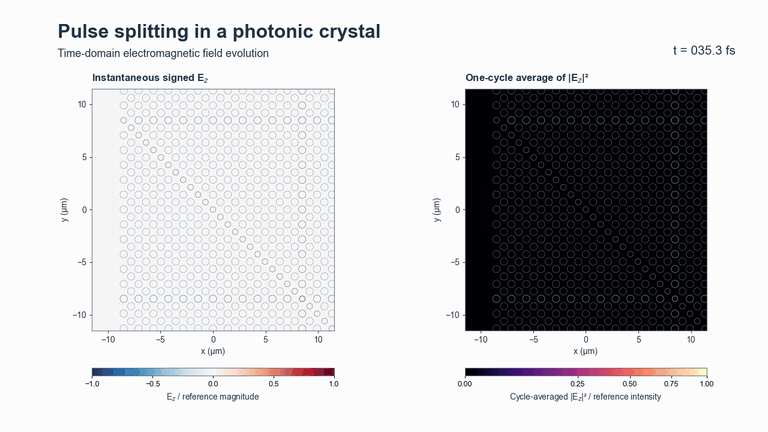
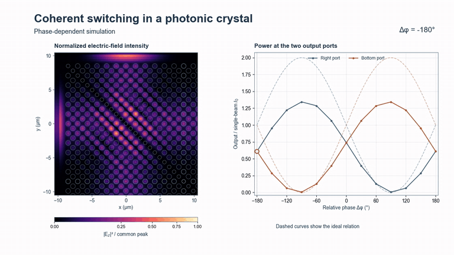

I used 2D FDTD to study beam routing in a square lattice of dielectric rods at 58.16 THz (5.155 µm in free space). Changing the rods along a diagonal row turns a beam or splits it between two outputs.

The FDTD pulse separates into forward and turned outputs at the diagonal defect. The panels show the signed electric field and its one-cycle mean square.

This phase sweep uses separate single-frequency results. Changing the input phase difference from −90° to +90° switches the dominant output from the right port to the bottom port.
A uniform lattice supports self-collimation. Removing a diagonal row turns the beam. Reducing the rod radius along that row produces nearly equal forward and turned outputs.